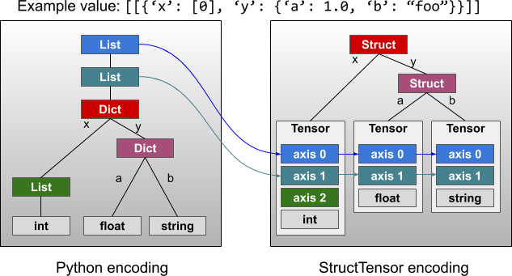

Models, Preprocessors, and Action Distributions
Contents


Models, Preprocessors, and Action Distributions#
The following diagram provides a conceptual overview of data flow between different components in RLlib.
We start with an Environment, which - given an action - produces an observation.
The observation is preprocessed by a Preprocessor and Filter (e.g. for running mean normalization)
before being sent to a neural network Model. The model output is in turn
interpreted by an ActionDistribution to determine the next action.
The components highlighted in green can be replaced with custom user-defined implementations, as described in the next sections. The purple components are RLlib internal, which means they can only be modified by changing the algorithm source code.
Default Behaviors#
Built-in Preprocessors#
RLlib tries to pick one of its built-in preprocessors based on the environment’s observation space. Thereby, the following simple rules apply:
Discrete observations are one-hot encoded, e.g.
Discrete(3) and value=1 -> [0, 1, 0].MultiDiscrete observations are encoded by one-hot encoding each discrete element and then concatenating the respective one-hot encoded vectors. e.g.
MultiDiscrete([3, 4]) and value=[1, 3] -> [0 1 0 0 0 0 1]because the first1is encoded as[0 1 0]and the second3is encoded as[0 0 0 1]; these two vectors are then concatenated to[0 1 0 0 0 0 1].Tuple and Dict observations are flattened, thereby, Discrete and MultiDiscrete sub-spaces are handled as described above. Also, the original dict/tuple observations are still available inside a) the Model via the input dict’s “obs” key (the flattened observations are in “obs_flat”), as well as b) the Policy via the following line of code (e.g. put this into your loss function to access the original observations:
dict_or_tuple_obs = restore_original_dimensions(input_dict["obs"], self.obs_space, "tf|torch")
For Atari observation spaces, RLlib defaults to using the DeepMind preprocessors
(preprocessor_pref=deepmind). However, if the Algorithm’s config key preprocessor_pref is set to “rllib”,
the following mappings apply for Atari-type observation spaces:
Images of shape
(210, 160, 3)are downscaled todim x dim, wheredimis a model config key (see default Model config below). Also, you can setgrayscale=Truefor reducing the color channel to 1, orzero_mean=Truefor producing -1.0 to 1.0 values (instead of 0.0 to 1.0 values by default).Atari RAM observations (1D space of shape
(128, )) are zero-averaged (values between -1.0 and 1.0).
In all other cases, no preprocessor will be used and the raw observations from the environment will be sent directly into your model.
Default Model Config Settings#
In the following paragraphs, we will first describe RLlib’s default behavior for automatically constructing models (if you don’t setup a custom one), then dive into how you can customize your models by changing these settings or writing your own model classes.
By default, RLlib will use the following config settings for your models.
These include options for the FullyConnectedNetworks (fcnet_hiddens and fcnet_activation),
VisionNetworks (conv_filters and conv_activation), auto-RNN wrapping, auto-Attention (GTrXL) wrapping,
and some special options for Atari environments:
MODEL_DEFAULTS: ModelConfigDict = {
# Experimental flag.
# If True, user specified no preprocessor to be created
# (via config._disable_preprocessor_api=True). If True, observations
# will arrive in model as they are returned by the env.
"_disable_preprocessor_api": False,
# Experimental flag.
# If True, RLlib will no longer flatten the policy-computed actions into
# a single tensor (for storage in SampleCollectors/output files/etc..),
# but leave (possibly nested) actions as-is. Disabling flattening affects:
# - SampleCollectors: Have to store possibly nested action structs.
# - Models that have the previous action(s) as part of their input.
# - Algorithms reading from offline files (incl. action information).
"_disable_action_flattening": False,
# === Built-in options ===
# FullyConnectedNetwork (tf and torch): rllib.models.tf|torch.fcnet.py
# These are used if no custom model is specified and the input space is 1D.
# Number of hidden layers to be used.
"fcnet_hiddens": [256, 256],
# Activation function descriptor.
# Supported values are: "tanh", "relu", "swish" (or "silu", which is the same),
# "linear" (or None).
"fcnet_activation": "tanh",
# VisionNetwork (tf and torch): rllib.models.tf|torch.visionnet.py
# These are used if no custom model is specified and the input space is 2D.
# Filter config: List of [out_channels, kernel, stride] for each filter.
# Example:
# Use None for making RLlib try to find a default filter setup given the
# observation space.
"conv_filters": None,
# Activation function descriptor.
# Supported values are: "tanh", "relu", "swish" (or "silu", which is the same),
# "linear" (or None).
"conv_activation": "relu",
# Some default models support a final FC stack of n Dense layers with given
# activation:
# - Complex observation spaces: Image components are fed through
# VisionNets, flat Boxes are left as-is, Discrete are one-hot'd, then
# everything is concated and pushed through this final FC stack.
# - VisionNets (CNNs), e.g. after the CNN stack, there may be
# additional Dense layers.
# - FullyConnectedNetworks will have this additional FCStack as well
# (that's why it's empty by default).
"post_fcnet_hiddens": [],
"post_fcnet_activation": "relu",
# For DiagGaussian action distributions, make the second half of the model
# outputs floating bias variables instead of state-dependent. This only
# has an effect is using the default fully connected net.
"free_log_std": False,
# Whether to skip the final linear layer used to resize the hidden layer
# outputs to size `num_outputs`. If True, then the last hidden layer
# should already match num_outputs.
"no_final_linear": False,
# Whether layers should be shared for the value function.
"vf_share_layers": True,
# == LSTM ==
# Whether to wrap the model with an LSTM.
"use_lstm": False,
# Max seq len for training the LSTM, defaults to 20.
"max_seq_len": 20,
# Size of the LSTM cell.
"lstm_cell_size": 256,
# Whether to feed a_{t-1} to LSTM (one-hot encoded if discrete).
"lstm_use_prev_action": False,
# Whether to feed r_{t-1} to LSTM.
"lstm_use_prev_reward": False,
# Whether the LSTM is time-major (TxBx..) or batch-major (BxTx..).
"_time_major": False,
# == Attention Nets (experimental: torch-version is untested) ==
# Whether to use a GTrXL ("Gru transformer XL"; attention net) as the
# wrapper Model around the default Model.
"use_attention": False,
# The number of transformer units within GTrXL.
# A transformer unit in GTrXL consists of a) MultiHeadAttention module and
# b) a position-wise MLP.
"attention_num_transformer_units": 1,
# The input and output size of each transformer unit.
"attention_dim": 64,
# The number of attention heads within the MultiHeadAttention units.
"attention_num_heads": 1,
# The dim of a single head (within the MultiHeadAttention units).
"attention_head_dim": 32,
# The memory sizes for inference and training.
"attention_memory_inference": 50,
"attention_memory_training": 50,
# The output dim of the position-wise MLP.
"attention_position_wise_mlp_dim": 32,
# The initial bias values for the 2 GRU gates within a transformer unit.
"attention_init_gru_gate_bias": 2.0,
# Whether to feed a_{t-n:t-1} to GTrXL (one-hot encoded if discrete).
"attention_use_n_prev_actions": 0,
# Whether to feed r_{t-n:t-1} to GTrXL.
"attention_use_n_prev_rewards": 0,
# == Atari ==
# Set to True to enable 4x stacking behavior.
"framestack": True,
# Final resized frame dimension
"dim": 84,
# (deprecated) Converts ATARI frame to 1 Channel Grayscale image
"grayscale": False,
# (deprecated) Changes frame to range from [-1, 1] if true
"zero_mean": True,
# === Options for custom models ===
# Name of a custom model to use
"custom_model": None,
# Extra options to pass to the custom classes. These will be available to
# the Model's constructor in the model_config field. Also, they will be
# attempted to be passed as **kwargs to ModelV2 models. For an example,
# see rllib/models/[tf|torch]/attention_net.py.
"custom_model_config": {},
# Name of a custom action distribution to use.
"custom_action_dist": None,
# Custom preprocessors are deprecated. Please use a wrapper class around
# your environment instead to preprocess observations.
"custom_preprocessor": None,
# === Options for ModelConfigs in RLModules ===
# The latent dimension to encode into.
# Since most RLModules have an encoder and heads, this establishes an agreement
# on the dimensionality of the latent space they share.
# This has no effect for models outside RLModule.
# If None, model_config['fcnet_hiddens'][-1] value will be used to guarantee
# backward compatibility to old configs. This yields different models than past
# versions of RLlib.
"encoder_latent_dim": None,
# Whether to always check the inputs and outputs of RLlib's default models for
# their specifications. Input specifications are checked on failed forward passes
# of the models regardless of this flag. If this flag is set to `True`, inputs and
# outputs are checked on every call. This leads to a slow-down and should only be
# used for debugging. Note that this flag is only relevant for instances of
# RLlib's Model class. These are commonly generated from ModelConfigs in RLModules.
"always_check_shapes": False,
# Deprecated keys:
# Use `lstm_use_prev_action` or `lstm_use_prev_reward` instead.
"lstm_use_prev_action_reward": DEPRECATED_VALUE,
# Deprecated in anticipation of RLModules API
"_use_default_native_models": DEPRECATED_VALUE,
}
The dict above (or an overriding sub-set) is handed to the Algorithm via the model key within
the main config dict like so:
algo_config = {
# All model-related settings go into this sub-dict.
"model": {
# By default, the MODEL_DEFAULTS dict above will be used.
# Change individual keys in that dict by overriding them, e.g.
"fcnet_hiddens": [512, 512, 512],
"fcnet_activation": "relu",
},
# ... other Algorithm config keys, e.g. "lr" ...
"lr": 0.00001,
}
Built-in Models#
After preprocessing (if applicable) the raw environment outputs, the processed observations are fed through the policy’s model. In case, no custom model is specified (see further below on how to customize models), RLlib will pick a default model based on simple heuristics:
A vision network (TF or Torch) for observations that have a shape of length larger than 2, for example,
(84 x 84 x 3).A fully connected network (TF or Torch) for everything else.
These default model types can further be configured via the model config key inside your Algorithm config (as discussed above).
Available settings are listed above and also documented in the model catalog file.
Note that for the vision network case, you’ll probably have to configure conv_filters, if your environment observations
have custom sizes. For example, "model": {"dim": 42, "conv_filters": [[16, [4, 4], 2], [32, [4, 4], 2], [512, [11, 11], 1]]} for 42x42 observations.
Thereby, always make sure that the last Conv2D output has an output shape of [B, 1, 1, X] ([B, X, 1, 1] for PyTorch), where B=batch and
X=last Conv2D layer’s number of filters, so that RLlib can flatten it. An informative error will be thrown if this is not the case.
Built-in auto-LSTM, and auto-Attention Wrappers#
In addition, if you set "use_lstm": True or "use_attention": True in your model config,
your model’s output will be further processed by an LSTM cell
(TF or Torch),
or an attention (GTrXL) network
(TF or
Torch), respectively.
More generally, RLlib supports the use of recurrent/attention models for all
its policy-gradient algorithms (A3C, PPO, PG, IMPALA), and the necessary sequence processing support
is built into its policy evaluation utilities.
See above for which additional config keys to use to configure in more detail these two auto-wrappers
(e.g. you can specify the size of the LSTM layer by lstm_cell_size or the attention dim by attention_dim).
For fully customized RNN/LSTM/Attention-Net setups see the Recurrent Models and Attention Networks/Transformers sections below.
Note
It is not possible to use both auto-wrappers (lstm and attention) at the same time. Doing so will create an error.
Customizing Preprocessors and Models#
Custom Preprocessors and Environment Filters#
Warning
Custom preprocessors have been fully deprecated, since they sometimes conflict with the built-in preprocessors for handling complex observation spaces. Please use wrapper classes around your environment instead of preprocessors. Note that the built-in default Preprocessors described above will still be used and won’t be deprecated.
Instead of using the deprecated custom Preprocessors, you should use gym.Wrappers to preprocess your environment’s output (observations and rewards),
but also your Model’s computed actions before sending them back to the environment.
For example, for manipulating your env’s observations or rewards, do:
import gym
from ray.rllib.utils.numpy import one_hot
class OneHotEnv(gym.core.ObservationWrapper):
# Override `observation` to custom process the original observation
# coming from the env.
def observation(self, observation):
# E.g. one-hotting a float obs [0.0, 5.0[.
return one_hot(observation, depth=5)
class ClipRewardEnv(gym.core.RewardWrapper):
def __init__(self, env, min_, max_):
super().__init__(env)
self.min = min_
self.max = max_
# Override `reward` to custom process the original reward coming
# from the env.
def reward(self, reward):
# E.g. simple clipping between min and max.
return np.clip(reward, self.min, self.max)
Custom Models: Implementing your own Forward Logic#
If you would like to provide your own model logic (instead of using RLlib’s built-in defaults), you
can sub-class either TFModelV2 (for TensorFlow) or TorchModelV2 (for PyTorch) and then
register and specify your sub-class in the config as follows:
Custom TensorFlow Models#
Custom TensorFlow models should subclass TFModelV2 and implement the __init__() and forward() methods.
forward() takes a dict of tensor inputs (mapping str to Tensor types), whose keys and values depend on
the view requirements of the model.
Normally, this input dict contains only the current observation obs and an is_training boolean flag, as well as an optional list of RNN states.
forward() should return the model output (of size self.num_outputs) and - if applicable - a new list of internal
states (in case of RNNs or attention nets). You can also override extra methods of the model such as value_function to implement
a custom value branch.
Additional supervised/self-supervised losses can be added via the TFModelV2.custom_loss method:
- class ray.rllib.models.tf.tf_modelv2.TFModelV2(obs_space: <MagicMock name='mock.spaces.Space' id='139637273977104'>, action_space: <MagicMock name='mock.spaces.Space' id='139637273977104'>, num_outputs: int, model_config: dict, name: str)[source]
TF version of ModelV2, which should contain a tf keras Model.
Note that this class by itself is not a valid model unless you implement forward() in a subclass.
- context() contextlib.AbstractContextManager[source]
Returns a contextmanager for the current TF graph.
- update_ops() List[Union[numpy.array, jnp.ndarray, tf.Tensor, torch.Tensor]][source]
Return the list of update ops for this model.
For example, this should include any BatchNorm update ops.
- register_variables(variables: List[Union[numpy.array, jnp.ndarray, tf.Tensor, torch.Tensor]]) None[source]
Register the given list of variables with this model.
- variables(as_dict: bool = False) Union[List[Union[numpy.array, jnp.ndarray, tf.Tensor, torch.Tensor]], Dict[str, Union[numpy.array, jnp.ndarray, tf.Tensor, torch.Tensor]]][source]
Returns the list (or a dict) of variables for this model.
- Parameters
as_dict – Whether variables should be returned as dict-values (using descriptive str keys).
- Returns
The list (or dict if
as_dictis True) of all variables of this ModelV2.
- trainable_variables(as_dict: bool = False) Union[List[Union[numpy.array, jnp.ndarray, tf.Tensor, torch.Tensor]], Dict[str, Union[numpy.array, jnp.ndarray, tf.Tensor, torch.Tensor]]][source]
Returns the list of trainable variables for this model.
- Parameters
as_dict – Whether variables should be returned as dict-values (using descriptive keys).
- Returns
The list (or dict if
as_dictis True) of all trainable (tf)/requires_grad (torch) variables of this ModelV2.
Once implemented, your TF model can then be registered and used in place of a built-in default one:
import ray
import ray.rllib.algorithms.ppo as ppo
from ray.rllib.models import ModelCatalog
from ray.rllib.models.tf.tf_modelv2 import TFModelV2
class MyModelClass(TFModelV2):
def __init__(self, obs_space, action_space, num_outputs, model_config, name): ...
def forward(self, input_dict, state, seq_lens): ...
def value_function(self): ...
ModelCatalog.register_custom_model("my_tf_model", MyModelClass)
ray.init()
algo = ppo.PPO(env="CartPole-v1", config={
"model": {
"custom_model": "my_tf_model",
# Extra kwargs to be passed to your model's c'tor.
"custom_model_config": {},
},
})
See the keras model example for a full example of a TF custom model.
More examples and explanations on how to implement custom Tuple/Dict processing models (also check out this test case here), custom RNNs, custom model APIs (on top of default models) follow further below.
Custom PyTorch Models#
Similarly, you can create and register custom PyTorch models by subclassing
TorchModelV2 and implement the __init__() and forward() methods.
forward() takes a dict of tensor inputs (mapping str to PyTorch tensor types), whose keys and values depend on
the view requirements of the model.
Usually, the dict contains only the current observation obs and an is_training boolean flag, as well as an optional list of RNN states.
forward() should return the model output (of size self.num_outputs) and - if applicable - a new list of internal
states (in case of RNNs or attention nets). You can also override extra methods of the model such as value_function to implement
a custom value branch.
Additional supervised/self-supervised losses can be added via the TorchModelV2.custom_loss method:
See these examples of fully connected, convolutional, and recurrent torch models.
- class ray.rllib.models.torch.torch_modelv2.TorchModelV2(obs_space: <MagicMock name='mock.spaces.Space' id='139637273977104'>, action_space: <MagicMock name='mock.spaces.Space' id='139637273977104'>, num_outputs: int, model_config: dict, name: str)[source]
Torch version of ModelV2.
Note that this class by itself is not a valid model unless you inherit from nn.Module and implement forward() in a subclass.
- variables(as_dict: bool = False) Union[List[Union[numpy.array, jnp.ndarray, tf.Tensor, torch.Tensor]], Dict[str, Union[numpy.array, jnp.ndarray, tf.Tensor, torch.Tensor]]][source]
Returns the list (or a dict) of variables for this model.
- Parameters
as_dict – Whether variables should be returned as dict-values (using descriptive str keys).
- Returns
The list (or dict if
as_dictis True) of all variables of this ModelV2.
- trainable_variables(as_dict: bool = False) Union[List[Union[numpy.array, jnp.ndarray, tf.Tensor, torch.Tensor]], Dict[str, Union[numpy.array, jnp.ndarray, tf.Tensor, torch.Tensor]]][source]
Returns the list of trainable variables for this model.
- Parameters
as_dict – Whether variables should be returned as dict-values (using descriptive keys).
- Returns
The list (or dict if
as_dictis True) of all trainable (tf)/requires_grad (torch) variables of this ModelV2.
Once implemented, your PyTorch model can then be registered and used in place of a built-in model:
import torch.nn as nn
import ray
from ray.rllib.algorithms import ppo
from ray.rllib.models import ModelCatalog
from ray.rllib.models.torch.torch_modelv2 import TorchModelV2
class CustomTorchModel(TorchModelV2):
def __init__(self, obs_space, action_space, num_outputs, model_config, name): ...
def forward(self, input_dict, state, seq_lens): ...
def value_function(self): ...
ModelCatalog.register_custom_model("my_torch_model", CustomTorchModel)
ray.init()
algo = ppo.PPO(env="CartPole-v1", config={
"framework": "torch",
"model": {
"custom_model": "my_torch_model",
# Extra kwargs to be passed to your model's c'tor.
"custom_model_config": {},
},
})
See the torch model examples for various examples on how to build a custom PyTorch model (including recurrent ones).
More examples and explanations on how to implement custom Tuple/Dict processing models (also check out this test case here), custom RNNs, custom model APIs (on top of default models) follow further below.
Wrapping a Custom Model (TF and PyTorch) with an LSTM- or Attention Net#
You can also use a custom (TF or PyTorch) model with our auto-wrappers for LSTMs (use_lstm=True) or Attention networks (use_attention=True).
For example, if you would like to wrap some non-default model logic with an LSTM, simply do:
# The custom model that will be wrapped by an LSTM.
class MyCustomModel(TorchModelV2):
def __init__(self, obs_space, action_space, num_outputs, model_config, name):
super().__init__(obs_space, action_space, num_outputs, model_config, name)
self.num_outputs = int(np.product(self.obs_space.shape))
self._last_batch_size = None
# Implement your own forward logic, whose output will then be sent
# through an LSTM.
def forward(self, input_dict, state, seq_lens):
obs = input_dict["obs_flat"]
# Store last batch size for value_function output.
self._last_batch_size = obs.shape[0]
# Return 2x the obs (and empty states).
# This will further be sent through an automatically provided
# LSTM head (b/c we are setting use_lstm=True below).
return obs * 2.0, []
def value_function(self):
return torch.from_numpy(np.zeros(shape=(self._last_batch_size,)))
if __name__ == "__main__":
ray.init()
# Register the above custom model.
ModelCatalog.register_custom_model("my_torch_model", MyCustomModel)
# Create the Algorithm from a config object.
config = (
ppo.PPOConfig()
.environment("CartPole-v1")
.framework("torch")
.training(
model={
# Auto-wrap the custom(!) model with an LSTM.
"use_lstm": True,
# To further customize the LSTM auto-wrapper.
"lstm_cell_size": 64,
# Specify our custom model from above.
"custom_model": "my_torch_model",
# Extra kwargs to be passed to your model's c'tor.
"custom_model_config": {},
}
)
)
algo = config.build()
algo.train()
algo.stop()
Implementing custom Recurrent Networks#
Instead of using the use_lstm: True option, it may be preferable to use a custom recurrent model.
This provides more control over postprocessing the LSTM’s output and can also allow the use of multiple LSTM cells to process different portions of the input.
For an RNN model it is recommended to subclass RecurrentNetwork (either the TF
or PyTorch versions) and then implement __init__(),
get_initial_state(), and forward_rnn().
- class ray.rllib.models.tf.recurrent_net.RecurrentNetwork(obs_space: <MagicMock name='mock.spaces.Space' id='139637273977104'>, action_space: <MagicMock name='mock.spaces.Space' id='139637273977104'>, num_outputs: int, model_config: dict, name: str)[source]#
Helper class to simplify implementing RNN models with TFModelV2.
Instead of implementing forward(), you can implement forward_rnn() which takes batches with the time dimension added already.
Here is an example implementation for a subclass
MyRNNClass(RecurrentNetwork):def __init__(self, *args, **kwargs): super(MyModelClass, self).__init__(*args, **kwargs) cell_size = 256 # Define input layers input_layer = tf.keras.layers.Input( shape=(None, obs_space.shape[0])) state_in_h = tf.keras.layers.Input(shape=(256, )) state_in_c = tf.keras.layers.Input(shape=(256, )) seq_in = tf.keras.layers.Input(shape=(), dtype=tf.int32) # Send to LSTM cell lstm_out, state_h, state_c = tf.keras.layers.LSTM( cell_size, return_sequences=True, return_state=True, name="lstm")( inputs=input_layer, mask=tf.sequence_mask(seq_in), initial_state=[state_in_h, state_in_c]) output_layer = tf.keras.layers.Dense(...)(lstm_out) # Create the RNN model self.rnn_model = tf.keras.Model( inputs=[input_layer, seq_in, state_in_h, state_in_c], outputs=[output_layer, state_h, state_c]) self.rnn_model.summary()
- __init__(obs_space: <MagicMock name='mock.spaces.Space' id='139637273977104'>, action_space: <MagicMock name='mock.spaces.Space' id='139637273977104'>, num_outputs: int, model_config: dict, name: str)#
Initializes a TFModelV2 instance.
Here is an example implementation for a subclass
MyModelClass(TFModelV2):def __init__(self, *args, **kwargs): super(MyModelClass, self).__init__(*args, **kwargs) input_layer = tf.keras.layers.Input(...) hidden_layer = tf.keras.layers.Dense(...)(input_layer) output_layer = tf.keras.layers.Dense(...)(hidden_layer) value_layer = tf.keras.layers.Dense(...)(hidden_layer) self.base_model = tf.keras.Model( input_layer, [output_layer, value_layer])
- get_initial_state() List[Union[numpy.array, jnp.ndarray, tf.Tensor, torch.Tensor]][source]#
Get the initial recurrent state values for the model.
- Returns
list of np.array objects, if any
Sample implementation for the
MyRNNClassexample:def get_initial_state(self): return [ np.zeros(self.cell_size, np.float32), np.zeros(self.cell_size, np.float32), ]
- forward_rnn(inputs: Union[numpy.array, jnp.ndarray, tf.Tensor, torch.Tensor], state: List[Union[numpy.array, jnp.ndarray, tf.Tensor, torch.Tensor]], seq_lens: Union[numpy.array, jnp.ndarray, tf.Tensor, torch.Tensor]) Tuple[Union[numpy.array, jnp.ndarray, tf.Tensor, torch.Tensor], List[Union[numpy.array, jnp.ndarray, tf.Tensor, torch.Tensor]]][source]#
Call the model with the given input tensors and state.
- Parameters
inputs – observation tensor with shape [B, T, obs_size].
state – list of state tensors, each with shape [B, T, size].
seq_lens – 1d tensor holding input sequence lengths.
- Returns
- The model output tensor of shape
[B, T, num_outputs] and the list of new state tensors each with shape [B, size].
- Return type
(outputs, new_state)
Sample implementation for the
MyRNNClassexample:def forward_rnn(self, inputs, state, seq_lens): model_out, h, c = self.rnn_model([inputs, seq_lens] + state) return model_out, [h, c]
Note that the inputs arg entering forward_rnn is already a time-ranked single tensor (not an input_dict!) with shape (B x T x ...).
If you further want to customize and need more direct access to the complete (non time-ranked) input_dict, you can also override
your Model’s forward method directly (as you would do with a non-RNN ModelV2). In that case, though, you are responsible for changing your inputs
and add the time rank to the incoming data (usually you just have to reshape).
You can check out the rnn_model.py models as examples to implement your own (either TF or Torch).
Implementing custom Attention Networks#
Similar to the RNN case described above, you could also implement your own attention-based networks, instead of using the
use_attention: True flag in your model config.
Check out RLlib’s GTrXL (Attention Net) implementations
(for TF and PyTorch)
to get a better idea on how to write your own models of this type. These are the models we use
as wrappers when use_attention=True.
You can run this example script to run these nets within some of our algorithms. There is also a test case, which confirms their learning capabilities in PPO and IMPALA.
Batch Normalization#
You can use tf.layers.batch_normalization(x, training=input_dict["is_training"]) to add batch norm layers to your custom model
(see a code example here).
RLlib will automatically run the update ops for the batch norm layers during optimization
(see tf_policy.py and
multi_gpu_learner_thread.py for the exact handling of these updates).
In case RLlib does not properly detect the update ops for your custom model, you can override the update_ops() method to return the list of ops to run for updates.
Custom Model APIs (on Top of Default- or Custom Models)#
So far we talked about a) the default models that are built into RLlib and are being provided automatically if you don’t specify anything in your Algorithm’s config and b) custom Models through which you can define any arbitrary forward passes.
Another typical situation in which you would have to customize a model would be to
add a new API that your algorithm needs in order to learn, for example a Q-value
calculating head on top of your policy model. In order to expand a Model’s API, simply
define and implement a new method (e.g. get_q_values()) in your TF- or TorchModelV2 sub-class.
You can now wrap this new API either around RLlib’s default models or around
your custom (forward()-overriding) model classes. Here are two examples that illustrate how to do this:
The Q-head API: Adding a dueling layer on top of a default RLlib model.
The following code adds a get_q_values() method to the automatically chosen
default Model (e.g. a FullyConnectedNetwork if the observation space is a 1D Box
or Discrete):
class DuelingQModel(TFModelV2): # or: TorchModelV2
"""A simple, hard-coded dueling head model."""
def __init__(self, obs_space, action_space, num_outputs, model_config, name):
# Pass num_outputs=None into super constructor (so that no action/
# logits output layer is built).
# Alternatively, you can pass in num_outputs=[last layer size of
# config[model][fcnet_hiddens]] AND set no_last_linear=True, but
# this seems more tedious as you will have to explain users of this
# class that num_outputs is NOT the size of your Q-output layer.
super(DuelingQModel, self).__init__(
obs_space, action_space, None, model_config, name
)
# Now: self.num_outputs contains the last layer's size, which
# we can use to construct the dueling head (see torch: SlimFC
# below).
# Construct advantage head ...
self.A = tf.keras.layers.Dense(num_outputs)
# torch:
# self.A = SlimFC(
# in_size=self.num_outputs, out_size=num_outputs)
# ... and value head.
self.V = tf.keras.layers.Dense(1)
# torch:
# self.V = SlimFC(in_size=self.num_outputs, out_size=1)
def get_q_values(self, underlying_output):
# Calculate q-values following dueling logic:
v = self.V(underlying_output) # value
a = self.A(underlying_output) # advantages (per action)
advantages_mean = tf.reduce_mean(a, 1)
advantages_centered = a - tf.expand_dims(advantages_mean, 1)
return v + advantages_centered # q-values
Now, for your algorithm that needs to have this model API to work properly (e.g. DQN),
you use this following code to construct the complete final Model using the
ModelCatalog.get_model_v2 factory function (code here):
my_dueling_model = ModelCatalog.get_model_v2(
obs_space=obs_space,
action_space=action_space,
num_outputs=action_space.n,
model_config=MODEL_DEFAULTS,
framework=args.framework,
# Providing the `model_interface` arg will make the factory
# wrap the chosen default model with our new model API class
# (DuelingQModel). This way, both `forward` and `get_q_values`
# are available in the returned class.
model_interface=DuelingQModel
if args.framework != "torch"
else TorchDuelingQModel,
name="dueling_q_model",
)
With the model object constructed above, you can get the underlying intermediate output (before the dueling head)
by calling my_dueling_model directly (out = my_dueling_model([input_dict])), and then passing out into
your custom get_q_values method: q_values = my_dueling_model.get_q_values(out).
The single Q-value API for SAC.
Our DQN model from above takes an observation and outputs one Q-value per (discrete) action. Continuous SAC - on the other hand - uses Models that calculate one Q-value only for a single (continuous) action, given an observation and that particular action.
Let’s take a look at how we would construct this API and wrap it around a custom model:
class TorchContActionQModel(TorchModelV2):
"""A simple, q-value-from-cont-action model (for e.g. SAC type algos)."""
def __init__(self, obs_space, action_space, num_outputs, model_config, name):
nn.Module.__init__(self)
# Pass num_outputs=None into super constructor (so that no action/
# logits output layer is built).
# Alternatively, you can pass in num_outputs=[last layer size of
# config[model][fcnet_hiddens]] AND set no_last_linear=True, but
# this seems more tedious as you will have to explain users of this
# class that num_outputs is NOT the size of your Q-output layer.
super(TorchContActionQModel, self).__init__(
obs_space, action_space, None, model_config, name
)
# Now: self.num_outputs contains the last layer's size, which
# we can use to construct the single q-value computing head.
# Nest an RLlib FullyConnectedNetwork (torch or tf) into this one here
# to be used for Q-value calculation.
# Use the current value of self.num_outputs, which is the wrapped
# model's output layer size.
combined_space = Box(-1.0, 1.0, (self.num_outputs + action_space.shape[0],))
self.q_head = TorchFullyConnectedNetwork(
combined_space, action_space, 1, model_config, "q_head"
)
# Missing here: Probably still have to provide action output layer
# and value layer and make sure self.num_outputs is correctly set.
def get_single_q_value(self, underlying_output, action):
# Calculate the q-value after concating the underlying output with
# the given action.
input_ = torch.cat([underlying_output, action], dim=-1)
# Construct a simple input_dict (needed for self.q_head as it's an
# RLlib ModelV2).
input_dict = {"obs": input_}
# Ignore state outputs.
q_values, _ = self.q_head(input_dict)
return q_values
Now, for your algorithm that needs to have this model API to work properly (e.g. SAC),
you use this following code to construct the complete final Model using the
ModelCatalog.get_model_v2 factory function (code here):
my_cont_action_q_model = ModelCatalog.get_model_v2(
obs_space=obs_space,
action_space=action_space,
num_outputs=2,
model_config=MODEL_DEFAULTS,
framework=args.framework,
# Providing the `model_interface` arg will make the factory
# wrap the chosen default model with our new model API class
# (DuelingQModel). This way, both `forward` and `get_q_values`
# are available in the returned class.
model_interface=ContActionQModel
if args.framework != "torch"
else TorchContActionQModel,
name="cont_action_q_model",
)
With the model object constructed above, you can get the underlying intermediate output (before the q-head)
by calling my_cont_action_q_model directly (out = my_cont_action_q_model([input_dict])), and then passing out
and some action into your custom get_single_q_value method:
q_value = my_cont_action_q_model.get_signle_q_value(out, action).
More examples for Building Custom Models#
A multi-input capable model for Tuple observation spaces (for PPO)
RLlib’s default preprocessor for Tuple and Dict spaces is to flatten incoming observations into one flat 1D array, and then pick a fully connected network (by default) to process this flattened vector. This is usually ok, if you have only 1D Box or Discrete/MultiDiscrete sub-spaces in your observations.
However, what if you had a complex observation space with one or more image components in it (besides 1D Boxes and discrete spaces). You would probably want to preprocess each of the image components using some convolutional network, and then concatenate their outputs with the remaining non-image (flat) inputs (the 1D Box and discrete/one-hot components).
Take a look at this model example that does exactly that:
class ComplexInputNetwork(TFModelV2):
"""TFModelV2 concat'ing CNN outputs to flat input(s), followed by FC(s).
Note: This model should be used for complex (Dict or Tuple) observation
spaces that have one or more image components.
The data flow is as follows:
`obs` (e.g. Tuple[img0, img1, discrete0]) -> `CNN0 + CNN1 + ONE-HOT`
`CNN0 + CNN1 + ONE-HOT` -> concat all flat outputs -> `out`
`out` -> (optional) FC-stack -> `out2`
`out2` -> action (logits) and vaulue heads.
"""
def __init__(self, obs_space, action_space, num_outputs, model_config, name):
self.original_space = (
obs_space.original_space
if hasattr(obs_space, "original_space")
else obs_space
)
self.processed_obs_space = (
self.original_space
if model_config.get("_disable_preprocessor_api")
else obs_space
)
super().__init__(
self.original_space, action_space, num_outputs, model_config, name
)
self.flattened_input_space = flatten_space(self.original_space)
# Build the CNN(s) given obs_space's image components.
self.cnns = {}
self.one_hot = {}
self.flatten_dims = {}
self.flatten = {}
concat_size = 0
for i, component in enumerate(self.flattened_input_space):
# Image space.
if len(component.shape) == 3 and isinstance(component, Box):
config = {
"conv_filters": model_config["conv_filters"]
if "conv_filters" in model_config
else get_filter_config(component.shape),
"conv_activation": model_config.get("conv_activation"),
"post_fcnet_hiddens": [],
}
self.cnns[i] = ModelCatalog.get_model_v2(
component,
action_space,
num_outputs=None,
model_config=config,
framework="tf",
name="cnn_{}".format(i),
)
concat_size += int(self.cnns[i].num_outputs)
# Discrete|MultiDiscrete inputs -> One-hot encode.
elif isinstance(component, (Discrete, MultiDiscrete)):
if isinstance(component, Discrete):
size = component.n
else:
size = np.sum(component.nvec)
config = {
"fcnet_hiddens": model_config["fcnet_hiddens"],
"fcnet_activation": model_config.get("fcnet_activation"),
"post_fcnet_hiddens": [],
}
self.one_hot[i] = ModelCatalog.get_model_v2(
Box(-1.0, 1.0, (size,), np.float32),
action_space,
num_outputs=None,
model_config=config,
framework="tf",
name="one_hot_{}".format(i),
)
concat_size += int(self.one_hot[i].num_outputs)
# Everything else (1D Box).
else:
size = int(np.product(component.shape))
config = {
"fcnet_hiddens": model_config["fcnet_hiddens"],
"fcnet_activation": model_config.get("fcnet_activation"),
"post_fcnet_hiddens": [],
}
self.flatten[i] = ModelCatalog.get_model_v2(
Box(-1.0, 1.0, (size,), np.float32),
action_space,
num_outputs=None,
model_config=config,
framework="tf",
name="flatten_{}".format(i),
)
self.flatten_dims[i] = size
concat_size += int(self.flatten[i].num_outputs)
# Optional post-concat FC-stack.
post_fc_stack_config = {
"fcnet_hiddens": model_config.get("post_fcnet_hiddens", []),
"fcnet_activation": model_config.get("post_fcnet_activation", "relu"),
}
self.post_fc_stack = ModelCatalog.get_model_v2(
Box(float("-inf"), float("inf"), shape=(concat_size,), dtype=np.float32),
self.action_space,
None,
post_fc_stack_config,
framework="tf",
name="post_fc_stack",
)
# Actions and value heads.
self.logits_and_value_model = None
self._value_out = None
if num_outputs:
# Action-distribution head.
concat_layer = tf.keras.layers.Input((self.post_fc_stack.num_outputs,))
logits_layer = tf.keras.layers.Dense(
num_outputs,
activation=None,
kernel_initializer=normc_initializer(0.01),
name="logits",
)(concat_layer)
# Create the value branch model.
value_layer = tf.keras.layers.Dense(
1,
activation=None,
kernel_initializer=normc_initializer(0.01),
name="value_out",
)(concat_layer)
self.logits_and_value_model = tf.keras.models.Model(
concat_layer, [logits_layer, value_layer]
)
else:
self.num_outputs = self.post_fc_stack.num_outputs
@override(ModelV2)
def forward(self, input_dict, state, seq_lens):
if SampleBatch.OBS in input_dict and "obs_flat" in input_dict:
orig_obs = input_dict[SampleBatch.OBS]
else:
orig_obs = restore_original_dimensions(
input_dict[SampleBatch.OBS], self.processed_obs_space, tensorlib="tf"
)
# Push image observations through our CNNs.
outs = []
for i, component in enumerate(tree.flatten(orig_obs)):
if i in self.cnns:
cnn_out, _ = self.cnns[i](SampleBatch({SampleBatch.OBS: component}))
outs.append(cnn_out)
elif i in self.one_hot:
if "int" in component.dtype.name:
one_hot_in = {
SampleBatch.OBS: one_hot(
component, self.flattened_input_space[i]
)
}
else:
one_hot_in = {SampleBatch.OBS: component}
one_hot_out, _ = self.one_hot[i](SampleBatch(one_hot_in))
outs.append(one_hot_out)
else:
nn_out, _ = self.flatten[i](
SampleBatch(
{
SampleBatch.OBS: tf.cast(
tf.reshape(component, [-1, self.flatten_dims[i]]),
tf.float32,
)
}
)
)
outs.append(nn_out)
# Concat all outputs and the non-image inputs.
out = tf.concat(outs, axis=1)
# Push through (optional) FC-stack (this may be an empty stack).
out, _ = self.post_fc_stack(SampleBatch({SampleBatch.OBS: out}))
# No logits/value branches.
if not self.logits_and_value_model:
return out, []
# Logits- and value branches.
logits, values = self.logits_and_value_model(out)
self._value_out = tf.reshape(values, [-1])
return logits, []
@override(ModelV2)
def value_function(self):
return self._value_out
Using the Trajectory View API: Passing in the last n actions (or rewards or observations) as inputs to a custom Model
It is sometimes helpful for learning not only to look at the current observation
in order to calculate the next action, but also at the past n observations.
In other cases, you may want to provide the most recent rewards or actions to the model as well
(like our LSTM wrapper does if you specify: use_lstm=True and lstm_use_prev_action/reward=True).
All this may even be useful when not working with partially observable environments (PO-MDPs)
and/or RNN/Attention models, as for example in classic Atari runs, where we usually use framestacking of
the last four observed images.
The trajectory view API allows your models to specify these more complex “view requirements”.
Here is a simple (non-RNN/Attention) example of a Model that takes as input the last 3 observations (very similar to the recommended “framestacking” for learning in Atari environments):
class FrameStackingCartPoleModel(TFModelV2):
"""A simple FC model that takes the last n observations as input."""
def __init__(
self, obs_space, action_space, num_outputs, model_config, name, num_frames=3
):
super(FrameStackingCartPoleModel, self).__init__(
obs_space, action_space, None, model_config, name
)
self.num_frames = num_frames
self.num_outputs = num_outputs
# Construct actual (very simple) FC model.
assert len(obs_space.shape) == 1
obs = tf.keras.layers.Input(shape=(self.num_frames, obs_space.shape[0]))
obs_reshaped = tf.keras.layers.Reshape([obs_space.shape[0] * self.num_frames])(
obs
)
rewards = tf.keras.layers.Input(shape=(self.num_frames))
rewards_reshaped = tf.keras.layers.Reshape([self.num_frames])(rewards)
actions = tf.keras.layers.Input(shape=(self.num_frames, self.action_space.n))
actions_reshaped = tf.keras.layers.Reshape([action_space.n * self.num_frames])(
actions
)
input_ = tf.keras.layers.Concatenate(axis=-1)(
[obs_reshaped, actions_reshaped, rewards_reshaped]
)
layer1 = tf.keras.layers.Dense(256, activation=tf.nn.relu)(input_)
layer2 = tf.keras.layers.Dense(256, activation=tf.nn.relu)(layer1)
out = tf.keras.layers.Dense(self.num_outputs)(layer2)
values = tf.keras.layers.Dense(1)(layer1)
self.base_model = tf.keras.models.Model([obs, actions, rewards], [out, values])
self._last_value = None
self.view_requirements["prev_n_obs"] = ViewRequirement(
data_col="obs", shift="-{}:0".format(num_frames - 1), space=obs_space
)
self.view_requirements["prev_n_rewards"] = ViewRequirement(
data_col="rewards", shift="-{}:-1".format(self.num_frames)
)
self.view_requirements["prev_n_actions"] = ViewRequirement(
data_col="actions",
shift="-{}:-1".format(self.num_frames),
space=self.action_space,
)
def forward(self, input_dict, states, seq_lens):
obs = tf.cast(input_dict["prev_n_obs"], tf.float32)
rewards = tf.cast(input_dict["prev_n_rewards"], tf.float32)
actions = one_hot(input_dict["prev_n_actions"], self.action_space)
out, self._last_value = self.base_model([obs, actions, rewards])
return out, []
def value_function(self):
return tf.squeeze(self._last_value, -1)
A PyTorch version of the above model is also given in the same file.
Custom Action Distributions#
Similar to custom models and preprocessors, you can also specify a custom action distribution class as follows. The action dist class is passed a reference to the model, which you can use to access model.model_config or other attributes of the model. This is commonly used to implement autoregressive action outputs.
import ray
import ray.rllib.algorithms.ppo as ppo
from ray.rllib.models import ModelCatalog
from ray.rllib.models.preprocessors import Preprocessor
class MyActionDist(ActionDistribution):
@staticmethod
def required_model_output_shape(action_space, model_config):
return 7 # controls model output feature vector size
def __init__(self, inputs, model):
super(MyActionDist, self).__init__(inputs, model)
assert model.num_outputs == 7
def sample(self): ...
def logp(self, actions): ...
def entropy(self): ...
ModelCatalog.register_custom_action_dist("my_dist", MyActionDist)
ray.init()
algo = ppo.PPO(env="CartPole-v1", config={
"model": {
"custom_action_dist": "my_dist",
},
})
Supervised Model Losses#
You can mix supervised losses into any RLlib algorithm through custom models. For example, you can add an imitation learning loss on expert experiences, or a self-supervised autoencoder loss within the model. These losses can be defined over either policy evaluation inputs, or data read from offline storage.
TensorFlow: To add a supervised loss to a custom TF model, you need to override the custom_loss() method. This method takes in the existing policy loss for the algorithm, which you can add your own supervised loss to before returning. For debugging, you can also return a dictionary of scalar tensors in the metrics() method. Here is a runnable example of adding an imitation loss to CartPole training that is defined over a offline dataset.
PyTorch: There is no explicit API for adding losses to custom torch models. However, you can modify the loss in the policy definition directly. Like for TF models, offline datasets can be incorporated by creating an input reader and calling reader.next() in the loss forward pass.
Self-Supervised Model Losses#
You can also use the custom_loss() API to add in self-supervised losses such as VAE reconstruction loss and L2-regularization.
Variable-length / Complex Observation Spaces#
RLlib supports complex and variable-length observation spaces, including gym.spaces.Tuple, gym.spaces.Dict, and rllib.utils.spaces.Repeated. The handling of these spaces is transparent to the user. RLlib internally will insert preprocessors to insert padding for repeated elements, flatten complex observations into a fixed-size vector during transit, and unpack the vector into the structured tensor before sending it to the model. The flattened observation is available to the model as input_dict["obs_flat"], and the unpacked observation as input_dict["obs"].
To enable batching of struct observations, RLlib unpacks them in a StructTensor-like format. In summary, repeated fields are “pushed down” and become the outer dimensions of tensor batches, as illustrated in this figure from the StructTensor RFC.
- For further information about complex observation spaces, see:
A custom environment and model that uses repeated struct fields.
The pydoc of the Repeated space.
The pydoc of the batched repeated values tensor.
The unit tests for Tuple and Dict spaces.
Variable-length / Parametric Action Spaces#
Custom models can be used to work with environments where (1) the set of valid actions varies per step, and/or (2) the number of valid actions is very large. The general idea is that the meaning of actions can be completely conditioned on the observation, i.e., the a in Q(s, a) becomes just a token in [0, MAX_AVAIL_ACTIONS) that only has meaning in the context of s. This works with algorithms in the DQN and policy-gradient families and can be implemented as follows:
The environment should return a mask and/or list of valid action embeddings as part of the observation for each step. To enable batching, the number of actions can be allowed to vary from 1 to some max number:
class MyParamActionEnv(gym.Env):
def __init__(self, max_avail_actions):
self.action_space = Discrete(max_avail_actions)
self.observation_space = Dict({
"action_mask": Box(0, 1, shape=(max_avail_actions, )),
"avail_actions": Box(-1, 1, shape=(max_avail_actions, action_embedding_sz)),
"real_obs": ...,
})
A custom model can be defined that can interpret the
action_maskandavail_actionsportions of the observation. Here the model computes the action logits via the dot product of some network output and each action embedding. Invalid actions can be masked out of the softmax by scaling the probability to zero:
class ParametricActionsModel(TFModelV2):
def __init__(self,
obs_space,
action_space,
num_outputs,
model_config,
name,
true_obs_shape=(4,),
action_embed_size=2):
super(ParametricActionsModel, self).__init__(
obs_space, action_space, num_outputs, model_config, name)
self.action_embed_model = FullyConnectedNetwork(...)
def forward(self, input_dict, state, seq_lens):
# Extract the available actions tensor from the observation.
avail_actions = input_dict["obs"]["avail_actions"]
action_mask = input_dict["obs"]["action_mask"]
# Compute the predicted action embedding
action_embed, _ = self.action_embed_model({
"obs": input_dict["obs"]["cart"]
})
# Expand the model output to [BATCH, 1, EMBED_SIZE]. Note that the
# avail actions tensor is of shape [BATCH, MAX_ACTIONS, EMBED_SIZE].
intent_vector = tf.expand_dims(action_embed, 1)
# Batch dot product => shape of logits is [BATCH, MAX_ACTIONS].
action_logits = tf.reduce_sum(avail_actions * intent_vector, axis=2)
# Mask out invalid actions (use tf.float32.min for stability)
inf_mask = tf.maximum(tf.log(action_mask), tf.float32.min)
return action_logits + inf_mask, state
Depending on your use case it may make sense to use just the masking, just action embeddings, or both. For a runnable example of “just action embeddings” in code, check out examples/parametric_actions_cartpole.py.
Note that since masking introduces tf.float32.min values into the model output, this technique might not work with all algorithm options. For example, algorithms might crash if they incorrectly process the tf.float32.min values. The cartpole example has working configurations for DQN (must set hiddens=[]), PPO (must disable running mean and set model.vf_share_layers=True), and several other algorithms. Not all algorithms support parametric actions; see the algorithm overview.
Autoregressive Action Distributions#
In an action space with multiple components (e.g., Tuple(a1, a2)), you might want a2 to be conditioned on the sampled value of a1, i.e., a2_sampled ~ P(a2 | a1_sampled, obs). Normally, a1 and a2 would be sampled independently, reducing the expressivity of the policy.
To do this, you need both a custom model that implements the autoregressive pattern, and a custom action distribution class that leverages that model. The autoregressive_action_dist.py example shows how this can be implemented for a simple binary action space. For a more complex space, a more efficient architecture such as a MADE is recommended. Note that sampling a N-part action requires N forward passes through the model, however computing the log probability of an action can be done in one pass:
class BinaryAutoregressiveOutput(ActionDistribution):
"""Action distribution P(a1, a2) = P(a1) * P(a2 | a1)"""
@staticmethod
def required_model_output_shape(self, model_config):
return 16 # controls model output feature vector size
def sample(self):
# first, sample a1
a1_dist = self._a1_distribution()
a1 = a1_dist.sample()
# sample a2 conditioned on a1
a2_dist = self._a2_distribution(a1)
a2 = a2_dist.sample()
# return the action tuple
return TupleActions([a1, a2])
def logp(self, actions):
a1, a2 = actions[:, 0], actions[:, 1]
a1_vec = tf.expand_dims(tf.cast(a1, tf.float32), 1)
a1_logits, a2_logits = self.model.action_model([self.inputs, a1_vec])
return (Categorical(a1_logits, None).logp(a1) + Categorical(
a2_logits, None).logp(a2))
def _a1_distribution(self):
BATCH = tf.shape(self.inputs)[0]
a1_logits, _ = self.model.action_model(
[self.inputs, tf.zeros((BATCH, 1))])
a1_dist = Categorical(a1_logits, None)
return a1_dist
def _a2_distribution(self, a1):
a1_vec = tf.expand_dims(tf.cast(a1, tf.float32), 1)
_, a2_logits = self.model.action_model([self.inputs, a1_vec])
a2_dist = Categorical(a2_logits, None)
return a2_dist
class AutoregressiveActionsModel(TFModelV2):
"""Implements the `.action_model` branch required above."""
def __init__(self, obs_space, action_space, num_outputs, model_config,
name):
super(AutoregressiveActionsModel, self).__init__(
obs_space, action_space, num_outputs, model_config, name)
if action_space != Tuple([Discrete(2), Discrete(2)]):
raise ValueError(
"This model only supports the [2, 2] action space")
# Inputs
obs_input = tf.keras.layers.Input(
shape=obs_space.shape, name="obs_input")
a1_input = tf.keras.layers.Input(shape=(1, ), name="a1_input")
ctx_input = tf.keras.layers.Input(
shape=(num_outputs, ), name="ctx_input")
# Output of the model (normally 'logits', but for an autoregressive
# dist this is more like a context/feature layer encoding the obs)
context = tf.keras.layers.Dense(
num_outputs,
name="hidden",
activation=tf.nn.tanh,
kernel_initializer=normc_initializer(1.0))(obs_input)
# P(a1 | obs)
a1_logits = tf.keras.layers.Dense(
2,
name="a1_logits",
activation=None,
kernel_initializer=normc_initializer(0.01))(ctx_input)
# P(a2 | a1)
# --note: typically you'd want to implement P(a2 | a1, obs) as follows:
# a2_context = tf.keras.layers.Concatenate(axis=1)(
# [ctx_input, a1_input])
a2_context = a1_input
a2_hidden = tf.keras.layers.Dense(
16,
name="a2_hidden",
activation=tf.nn.tanh,
kernel_initializer=normc_initializer(1.0))(a2_context)
a2_logits = tf.keras.layers.Dense(
2,
name="a2_logits",
activation=None,
kernel_initializer=normc_initializer(0.01))(a2_hidden)
# Base layers
self.base_model = tf.keras.Model(obs_input, context)
self.register_variables(self.base_model.variables)
self.base_model.summary()
# Autoregressive action sampler
self.action_model = tf.keras.Model([ctx_input, a1_input],
[a1_logits, a2_logits])
self.action_model.summary()
self.register_variables(self.action_model.variables)
Note
Not all algorithms support autoregressive action distributions; see the algorithm overview table for more information.